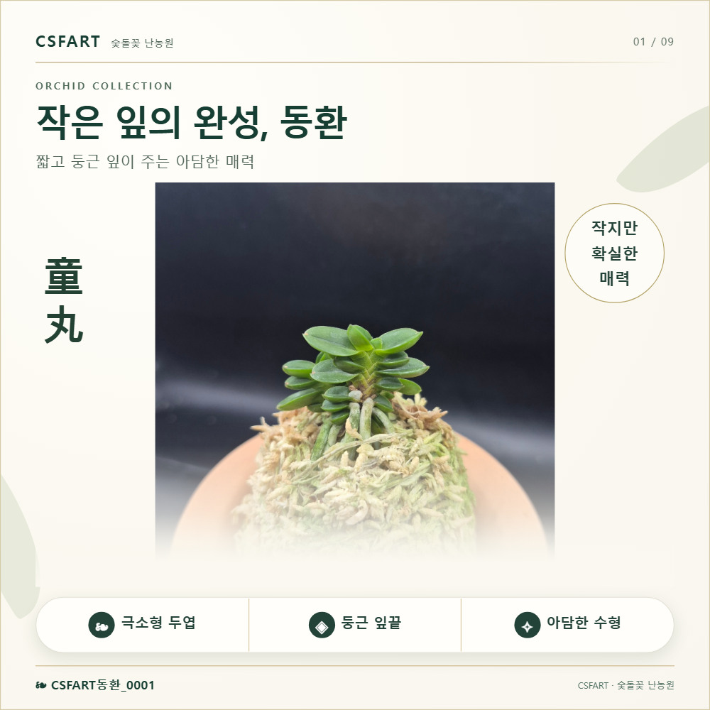
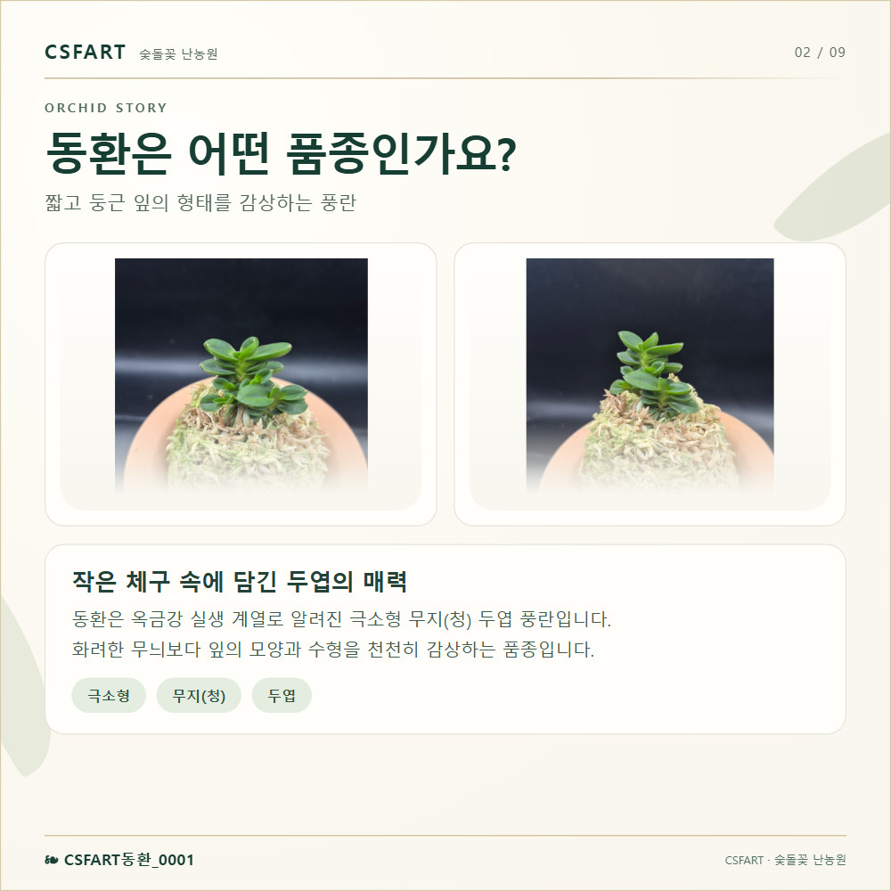
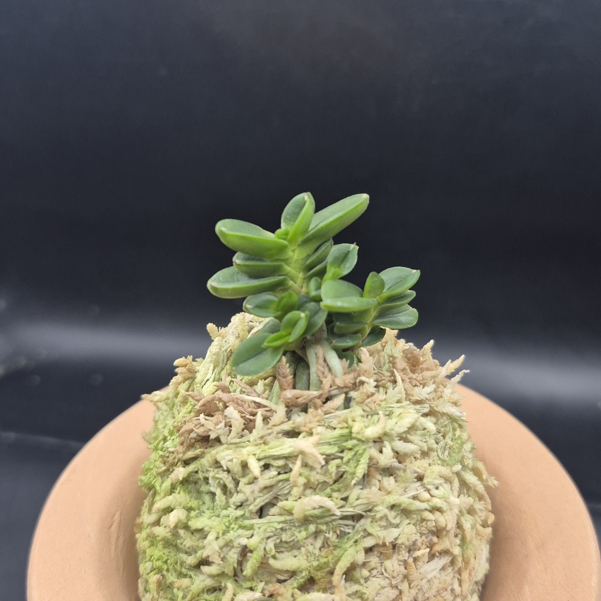
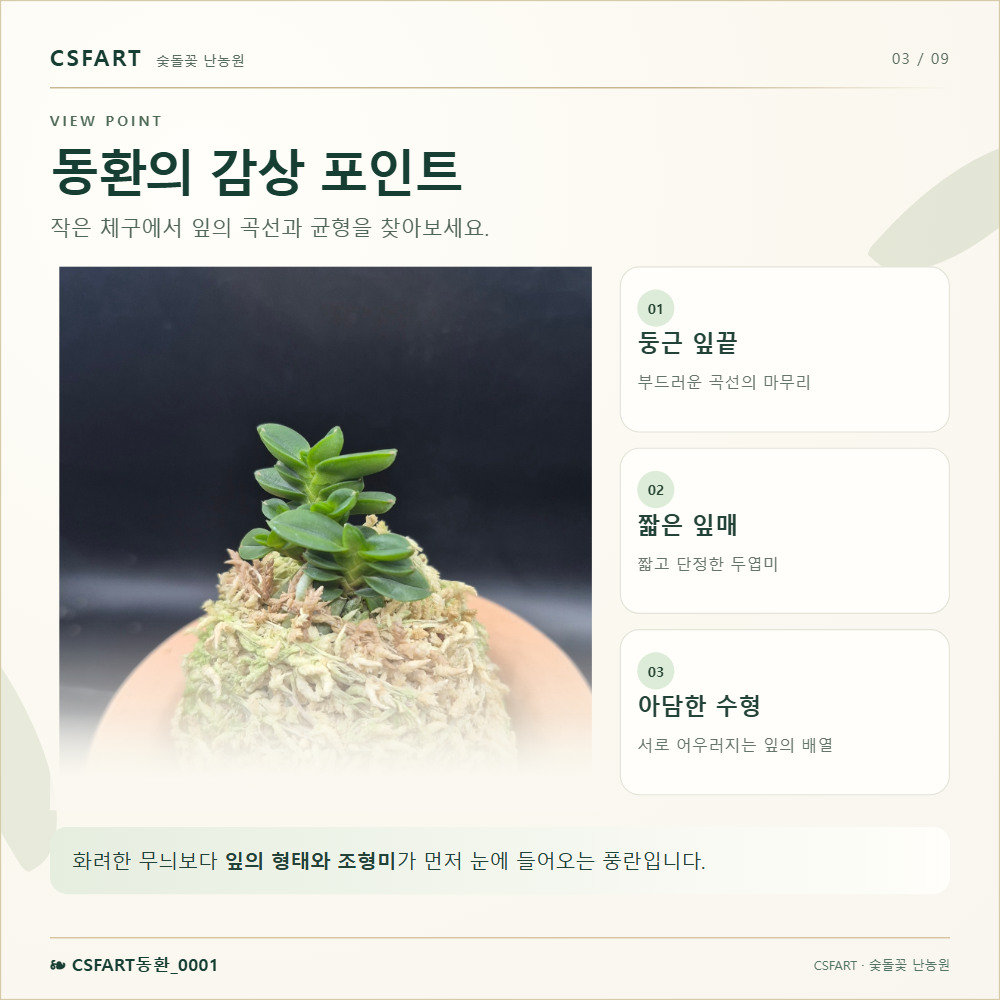
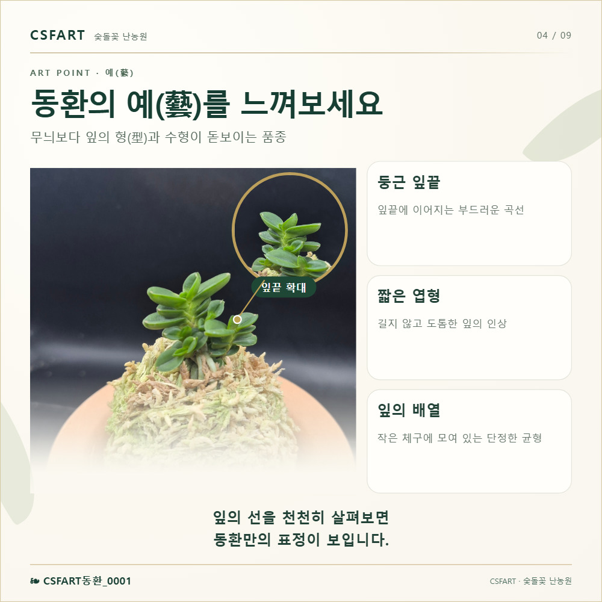
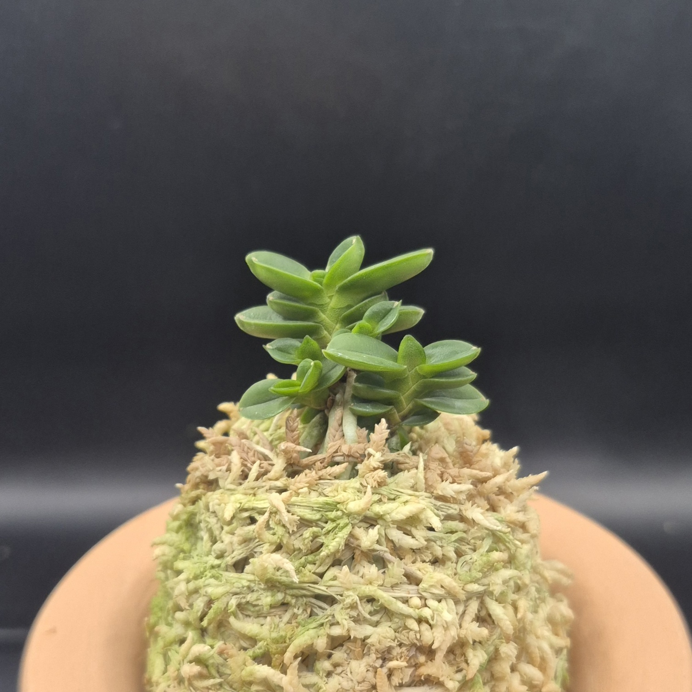
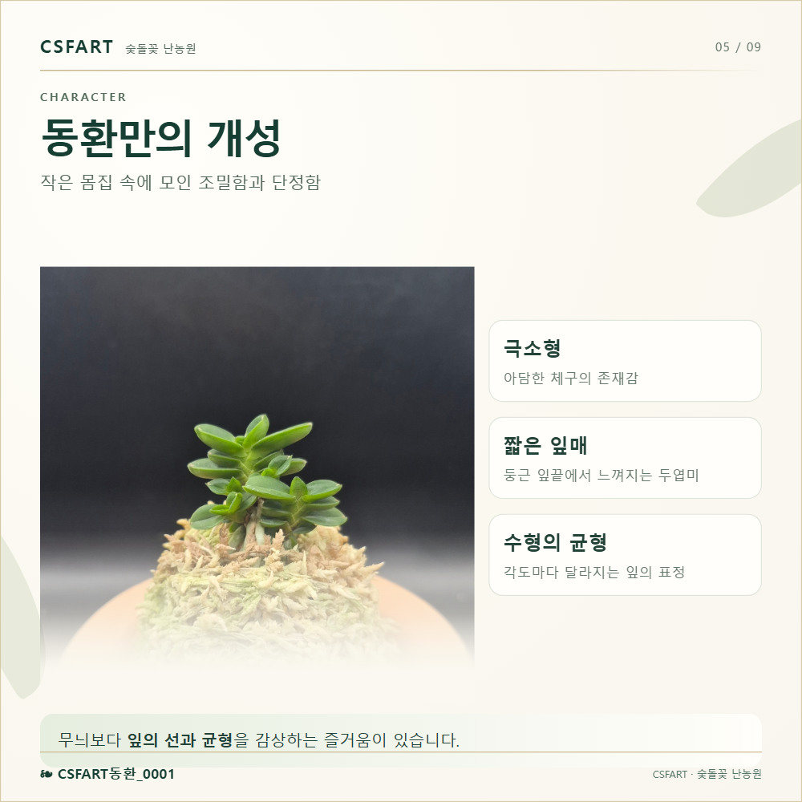
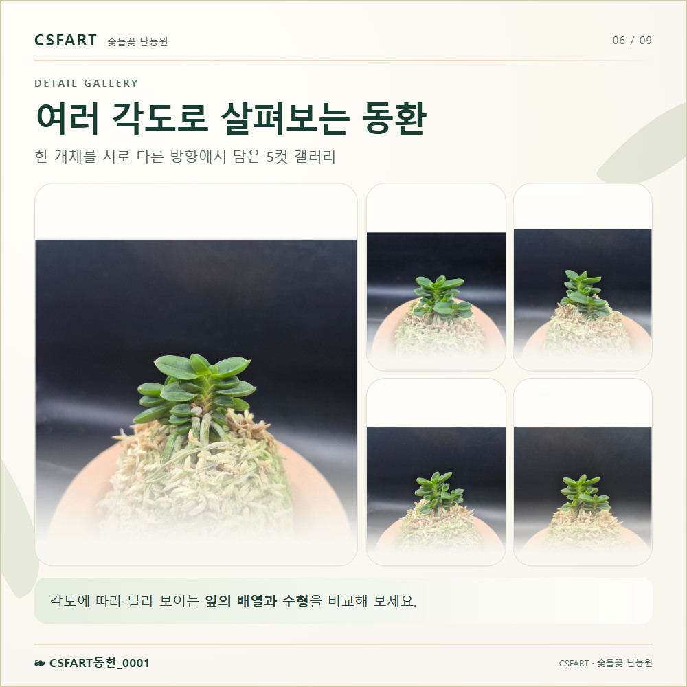
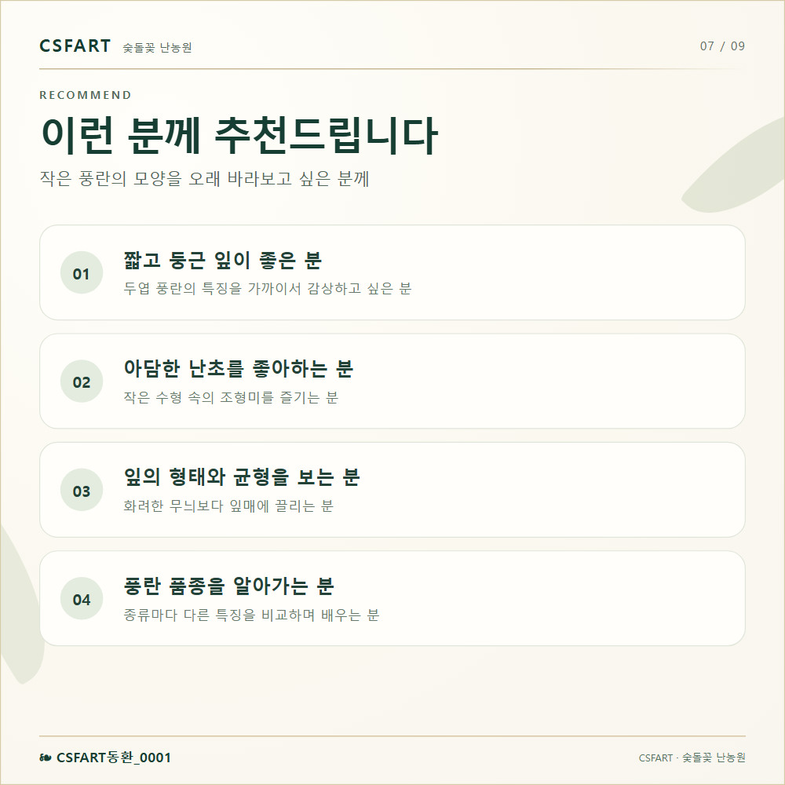
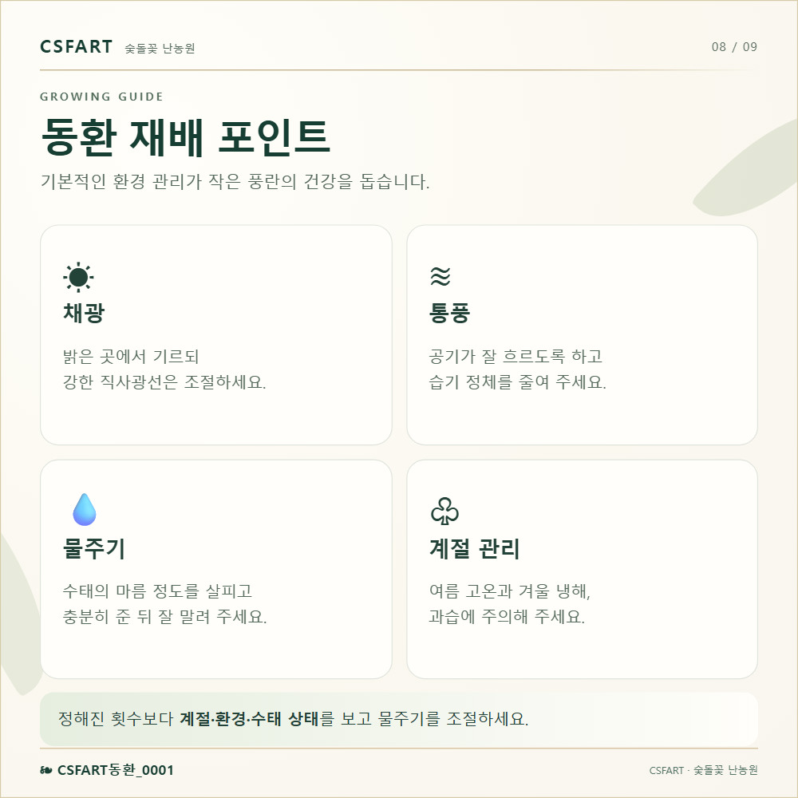

CSFART ORCHID COLLECTION
동환(童丸) 0001 · 풍란 부귀란
무지(청) · 극소형 두엽 · 짧고 둥근 잎
70,000원
CSFART동환_0001
동환 0001 사진 · 먼저 3장

입고한 동환의 잎 형태와 수태볼, 화분을 사진으로 살펴보세요.
동환(童丸)의 예(藝) · 작은 잎의 균형
동환은 짧고 둥근 잎이 돋보이는 극소형 무지(청) 두엽 풍란입니다. 화려한 잎무늬보다 잎끝의 부드러운 곡선, 두툼한 잎의 질감과 아담한 수형을 감상하는 품종입니다.
동그랗게 모인 녹색 잎과 수태볼 위에서 자라는 작은 풍란의 조형미를 만나보세요.
동환의 감상 포인트 · 설명 이미지 9장
실사진의 둥근 잎끝과 짧은 엽형을 확대 원형컷과 연결선으로 살펴볼 수 있습니다.


동환 0001 · 다른 각도



동환 0001 · 다른 각도






동환(童丸) 0001 · 70,000원
동환 0001의 구매 및 판매 조건은 CSFART 스마트스토어에서 확인할 수 있습니다.
네이버에서 구매하기 ↗실시간 판매조건·재고·배송 안내는 스마트스토어 표시 기준입니다.